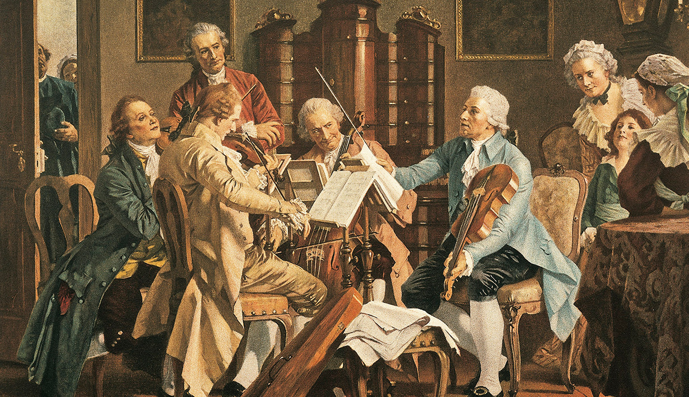

การกำเนิดของเครื่องดนตรีเกิดขึ้นตั้งแต่สมัยโบราณ โดยมนุษย์รู้จักการสร้างเครื่องดนตรีง่ายๆ จากธรรมชาติรอบข้างคือ เริ่มจากการปรบมือผิวปาก เคาะหิน หรือนำกิ่งไม้มาตีกันซึ่งต่อมาได้มีการสร้างเครื่องดนตรีที่มีรูป ทรงลักษณะต่างๆ ที่แตกต่างกันไปในแต่ละชนชาติ โดยมีการแลกเปลี่ยนศิลปวัฒนธรรมและลักษณะเครื่องดนตรีของชนชาติต่างๆ โดยเฉพาะเครื่องดนตรีสากลที่เป็นเครื่องดนตรีของชาวตะวันตกที่นำมาเล่นกัน แพร่หลายในปัจจุบัน สำหรับการกำเนิดของดนตรีตะวันตกนั้นมาจากเครื่องดนตรีของชนชาติกรีกโบราณที่ สร้างเครื่องดนตรีขึ้นมา 3 ชนิดคือ ไลรา คีธารา และออโรสจนต่อมามีการพัฒนาสร้างเครื่องดนตรีประเภทต่างๆ ทั้งประเภทเครื่องสายเครื่องเป่า เครื่องทองเหลือง เครื่องตี และเครื่องดีดหรือเครื่องเคาะ เช่นไวโอลิน ฟลุต ทรัมเป็ต กลองชุด กีตาร์ ฯลฯโดยพบเครื่องดนตรีสากลได้ในวงดนตรีสากลประเภทต่างๆ ตั้งแต่สมัยโบราณจนถึงปัจจุบัน
การสืบสาวเรื่องราวเกี่ยวกับความเป็นมาของดนตรีตั้งแต่สมัยโบราณมา นับว่าเป็นเรื่องยากที่จะให้ได้เรื่องราว สมัยของการรู้จักใช้อักษรหรือสัญลักษณ์อื่นๆ เพึ่งจะมีปรากฏและเริ่มนิยมใช้กันในสมัยเริ่มต้นของยุค Middle age คือระหว่างศตวรรษที่ 5-6 และการบันทึกมีเพียงเครื่องหมายแสดงเพียงระดับของเสียง และจังหวะ ( Pitch and time ) ดนตรี เกิดขึ้นมาในโลกพร้อมๆกับมนุษย์เรานั่นเอง ในยุคแรกๆมนุษย์อาศัยอยู่ในป่าดง ในถ้ำ ในโพรงไม้ แต่ก็รู้จักการร้องรำทำเพลงตามธรรมชาติ เช่นรู้จักปรบมือ เคาะหิน เคาะไม้ เป่าปาก เป่าเขา และเปล่งเสียงร้องตามเรื่อง การร้องรำทำเพลงไปเพื่ออ้อนวอนพระเจ้าเพื่อช่วยให้ตนพ้นภัย บันดาลความสุขความอุดมสมบูรณ์ต่างๆให้แก่ตน หรือเป็นการบูชาแสดงความขอบคุณพระเจ้าที่บันดาลให้ตนมีความสุขความสบาย โลกได้ผ่านหลายยุคหลายสมัย ดนตรีได้วิวัฒนาการไปตามความเจริญและความคิดสร้างสรรค์ของมนุษย์ เครื่องดนตรีที่เคยใช้ในสมัยเริ่มแรกก็มีการวิวัฒนาการมาเป็นขั้นๆ กลายเป็นเครื่องดนตรี ที่เราเห็นอยู่ทุกวัน เพลงที่ร้องเพื่ออ้อนวอนพระเจ้า ก็กลายมาเป็นเพลงสวดทางศาสนา และเพลงร้องโดยทั่วๆไป
ในระยะแรก ดนตรีมีเพียงเสียงเดียวและแนวเดียวเท่านั้นเรียกว่า Melody ไม่มีการประสานเสียง จนถึงศตวรรษที่ 12 มนุษย์เราเริ่มรู้จักการใช้เสียงต่างๆมาประสานกันอย่างง่ายๆ เกิดเป็นดนตรีหลายเสียงขึ้นมา
1. สมัยกรีก (Ancient Greek music)